Understanding the Repository
The structure of the repository given by Github presents a rational approach to organization of infromation, organized
by tabs. We will explore the repository through each tab.
Code Tab
The Code Tab is located on the front page of the repository.
Commits
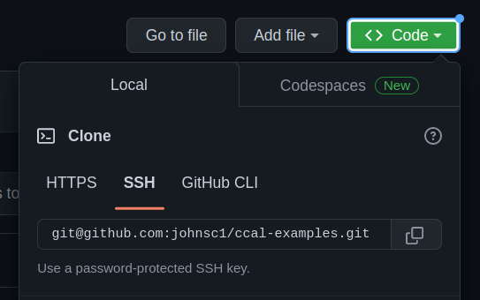
Above the file structure are the commits for the repository. These represent when information is checked in or out of the repository.
Commits one of the methods Github uses to record the versions of the information within.
The check out process begins with cloning the repository onto your computer via your terminal. A terminal is a method of communicating with your computer system by typing
phrases, called commands. Think of cloning as a way to download the repository, which appears as a folder with files inside.
The command to clone a repository is
git clone repository_link
Then, your version of the reposutory can be updated with command
git pull
There are two methods for accessioning information or aquiring new versions of items. One of these is via commits, which is done with commands in this order.
git add -A
git commit -m "your commit message"
git push
When items or new versions of items are checked in, they are mirrored in the online collection in Github as they have been placed in the folders on the user's computer. Now,
users can check out the most updated version of the repository. Other methods of aquisition will be covered later.
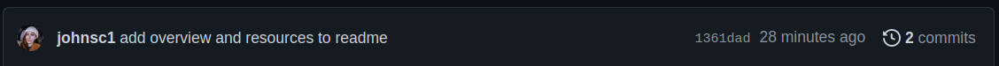
Branches
When a repository is being used according to the best practices in software which value discrete levels of organization,
branches are used. Like within library systems, information circulates between branches and some branches might contain
information others do not. Additionally, the main branch is considered the one with the most information and resources.
This is the same with branches on Github. Contributors can create branches, check in new information, and request tthat
information to be shared into the main branch.
README
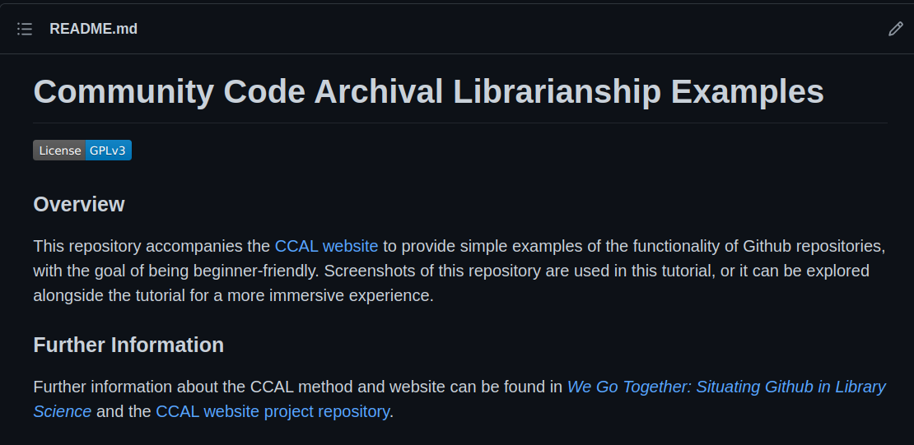
Consider the README as a psuedo-finding aid or carrying out the actions of a reference librarian. The README, located below the collections, holds essential information about the project and repository, and directs users toward important
information such as details about the project, how to begin using the software, and how to contribute in the free open source software (FOSS) community.
The structure of READMEs varies by project, but they tend to share this same purpose. Other READMEs which deviate from this might hold a collection of information on a specific
topic within the README itself. This is an example of how Github is flexible to the intentions of users of the platform.
Releases and Packages
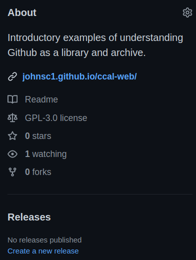
Releases and packages are a more formal method of recording the version of information. When a release of a document is made
or a package of software is released. Every release is preserved as new ones come out, and can still be accessed as
new versions are made. Because Github software tends to revolve around the work of FOSS communities, each release of
software is the version of a cultural record of these communities.
Issues Tab
Issues are a major point of communication for free open source software development communities. Github as a platform creates
organization for issues, keeps record of all issues created and their order of creation by assigning ID numbers to each. This
allows users and contributors to continue accessing this information as they work with the project.
Open Issues
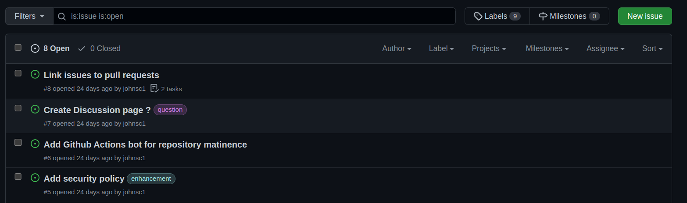
Open issues are currently active. When they are open, users and contributors can leave comments. This helps multiple
individuals collaborate on one task. Contributors might seek advice from maintainers, or managers, of the project.
Users who recognize a problem, or bug, with the code can create issues. Sometimes issues are created to note opportunities
for improvement in the project.
Closed Issues
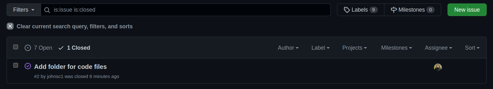
Closed issues are issues which have either been resolved or have gone stale (like old bread), or inactive for an extended period of time.
All issues are kept as closed issues once they are closed. Sometimes they are closed by maintainers because the issue has been addressed
adequetley. Issues are most often closed due to a pull request which adds or removes information from the collections, resolving
the issue. These will be addressed in the following section.
Pull Requests Tab
Pull requests are another way of accessioning or aquiring new information to the repository and collections. They take a piece of the project
which has been continuously modified seperate from the main branch and add this set of modifications to the main branch. A pull request contains
commits, which are collected within a branch or fork.
In order for the information in these comits to be added to the main branch, maintainers of
the repository must accept the pull request and facilitate the merging of commits
into the main branch.
Open Pull Requests
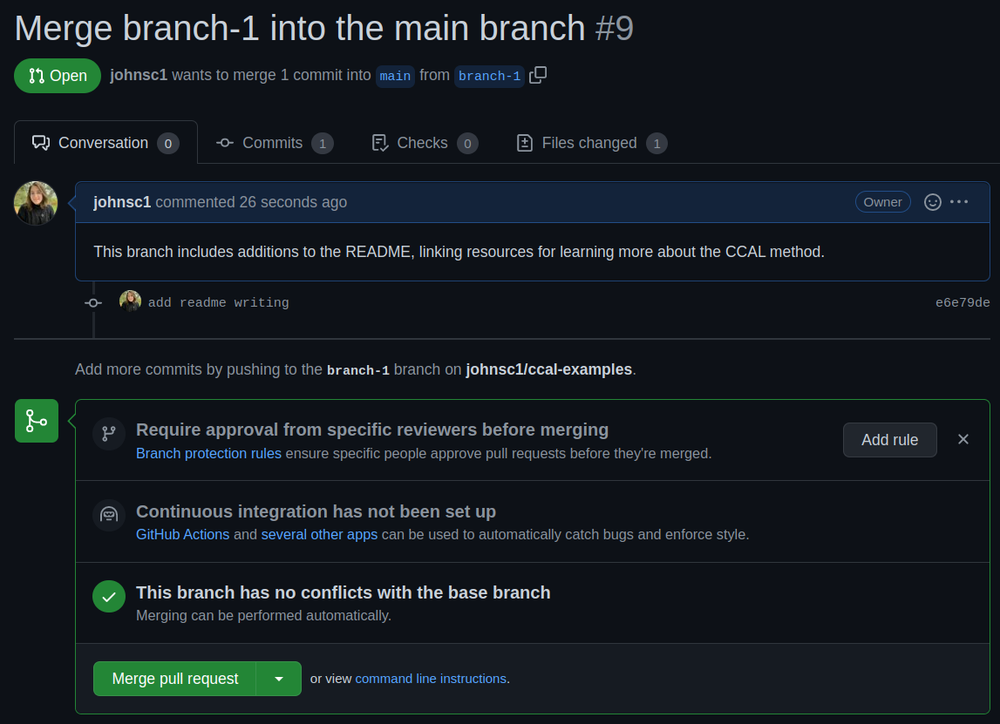
A pull request is considered open when it has not been merge and is currently active. In an open pull request,
like with issues, the contributor can request a review of the pull request from the maintainers of the
repository. Then, if maintainers respond, they evaluate the information in the commits and use
the comments to communicate any necessary changes or merge approvals to the contributors. If changes are
requested, approval to merge into the main branch is contingent on those changes being made.
It is at this stage where the information to be accessioned or aquired is selected by the maintainers,
from what the contributors have provided. The contribution of this information and maintainers
reviewing this shows their service to the project itself and the project development community.
Additionally, each pull request has it's own unique ID number for reference in that repository.
Closed Pull Requests
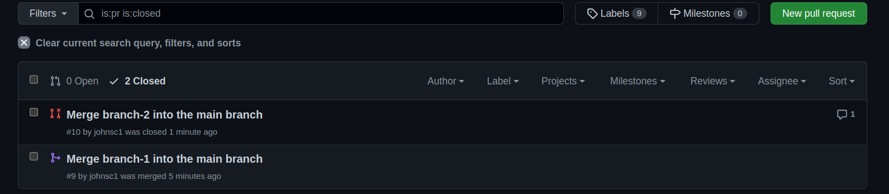
A closed pull request may have gone inactive, been closed without a merge, or merged into the main branch. Github itself
is structured to preserve these pull requests beyond their active state. These pull requests retain their unique ID,
and the full pull request including any discussion on it is preserved as a whole. The red icon with two disconnected pieces refers to a pull request closed without merging,
while a purple icon with connected pieces refers to a merged pull request closed by merging.
Closed pull requests are valuable to the repository as they hold information which might be of use in future project developement, and
record the history of the communications and work in the community associated with the project.
Actions
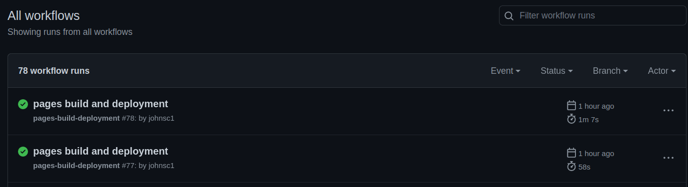
The Actions within a Github repository refer to bots who automate processes. This automation saves labor in the process
of maintaining the repository. Think of the bot as a sequence of actions which can be repeated as needed, all within that
same sequence. When a bot carries out their actions, Github keeps a record of each time this occurs and what they did.
Projects
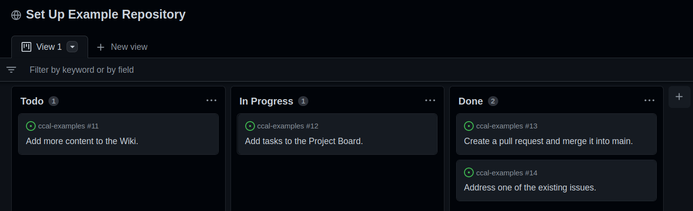
Like the Issues tab, projects are another site of communication and organization. It allows for there to be a
rational visualization of information. Projects are more focused on highlighting tasks to complete than
facilitating discussion, but Issues and Pull Requests can be linked within tasks.
Wiki
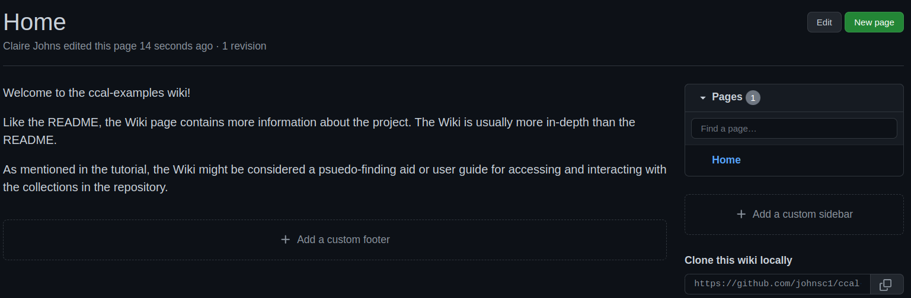
This tab serves as a center for information communication and documentation. Like the README,
the Wiki might be considered a psuedo-fining aid and user guide for accessing and interacting with
the collections in the repository.
Security
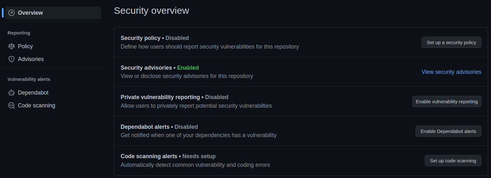
This is where it is possible to see how this project is taking steps to protect the privacy of
users as they interact with the software. On pandas, this serves as a site to report security risks
users find.
Insights
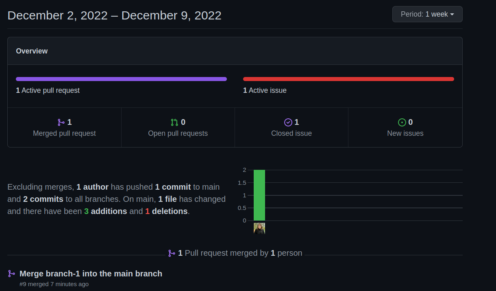
Insights is a tab collected by Github itself, visualizing information about the project community. This is where
Github as a platform surfaces individual contributions to the project and evaluates the community
according to a set of standards based on Github best practices, holding the community accountable to these.